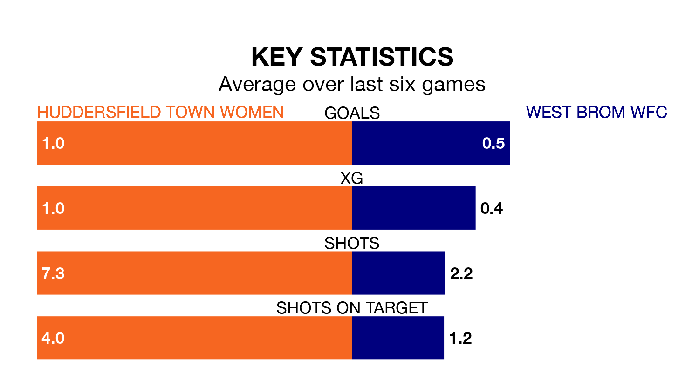

West Brom WFC face Huddersfield Town Women on Sunday seeking to protect their long unbeaten run in the Women's National League Premier Division North.
West Brom WFC are unbeaten in five, with two wins and three draws, ahead of the 2pm kick-off.
They face a Huddersfield Town team who have won just one and lost four over the same number of games.
Huddersfield Town are 11th in the table after 12 games, of which they have won two and lost 10, earning six points.
West Brom WFC are three places ahead of the hosts in eighth, with four wins and four draws putting them on 16 points.
In the last 10 years, Huddersfield Town and West Brom WFC have played each other on six occasions. Huddersfield Town won four of them, West Brom WFC one, and they drew once.
On average, Huddersfield Town scored 3.0 goals and West Brom WFC 1.2 in those matches.
Their last meeting was on September 17, when West Brom WFC won 4-1 at home.
With 12 goals in 12 games so far this season, Huddersfield Town are the league's second-lowest scorers with 1.0 goals per game. And they are conceding more than average, letting in 38 goals at a rate of 3.2 per game.
The away team are also below average scorers, with 1.3 goals per game, compared to a league average of 1.7. They have conceded 1.8 goals per game.
Huddersfield Town's last match was on February 11, a 3-1 loss against Derby County Women.
West Brom WFC drew 0-0 with Halifax Women last time out, also on February 11.
Updated: 10:08 (UTC), 23/02/24